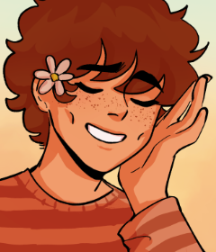

Merritt Antonio Mamani
Merritt is a friendly ray of sunshine and a naturally touchy guy who's sometimes a little oblivious to how close he gets to people.
He likes drawing from observation and doesn't mind showing others his work, but this changes when a particular subject catches his interest. Showing anyone his drawings of Nik would be like an admission he's not ready to make. It makes Merritt a little self-conscious, and he wonders if he should be paying this much attention to his friend at all.
Merritt has never been too interested in romance, and has broken a few hearts in his early teens because of this. Not having had concrete experience, he's left to wonder if what he feels is normal or something else.
Family: Merritt's parents are away for work often, so he's learned to keep himself occupied with little hobbies as a single child.
Friends: He's friendly with many people since he's very sweet, though not necessarily extroverted. His closest friends include: Nik, Sam, Tudor, Helen.
Tropes: Sunshine boy, thoughtful artist, go-with-the-flow.
- Likes: his sketchbook, laughing, observing nature and people
- Birthday: May 24th, 1974 (16/17 in 1991)
- Fun Fact: Fluent in Spanish